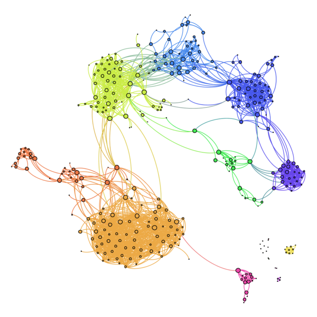

Echo Chambers in a Transformed Communication Environment: An Attempt to Clarify a Metaphor.
Goal
This bachelor thesis investigates the cognitive and structural underpinnings of echo chambers in social networks, aiming to bridge epistemology and computational social science. It explores how confirmation bias and homophily lead to selective exposure and belief polarization.
Methods
The study combines formal literature analysis with a systematic review approach and theoretical modeling to map out the conceptual landscape of echo chambers. Key methods include:
- Analytical synthesis of cognitive bias literature (confirmation bias, motivated reasoning)
- Critical assessment of empirical and agent-based studies
- Application of a multi-disciplinary theoretical framework grounded in cognitive science and media theory
This thesis sharpened my ability to work across disciplines, synthesize diverse perspectives, and critically evaluate conceptual assumptions. It developed my written communication skills, capacity for argumentation, and ability to work independently on long-term research projects.